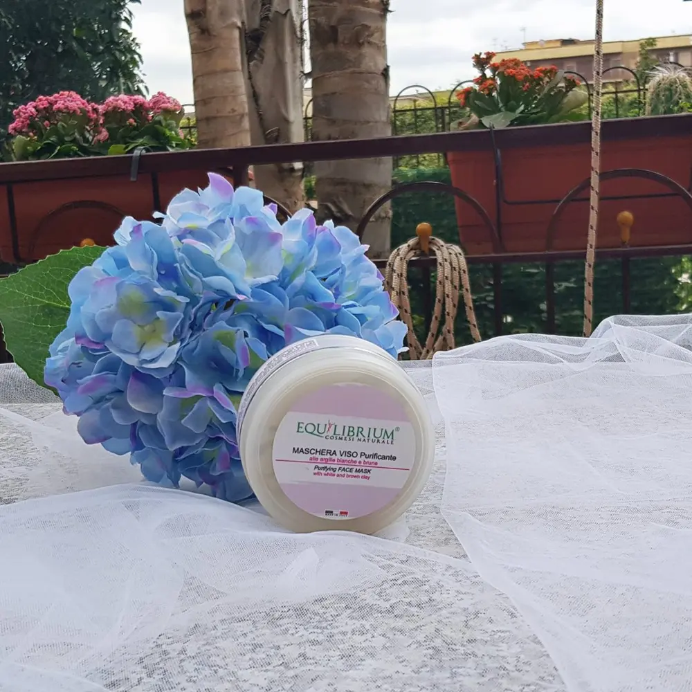
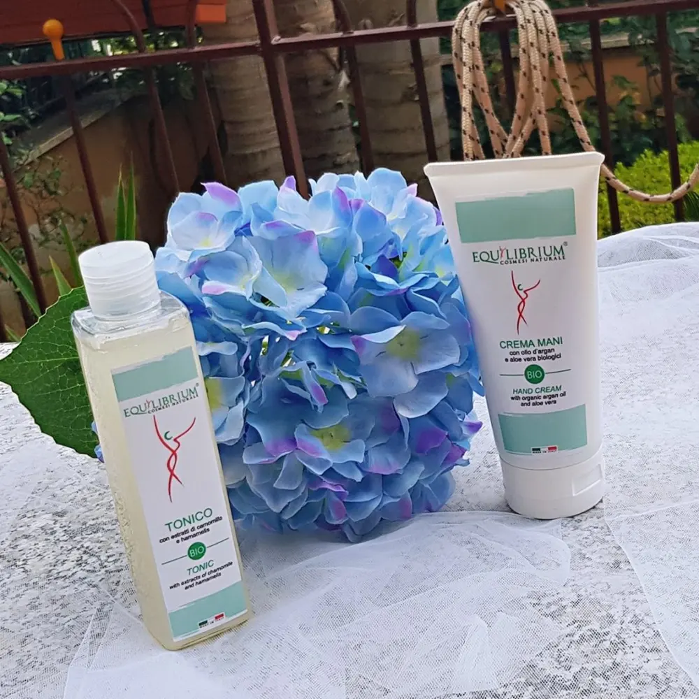
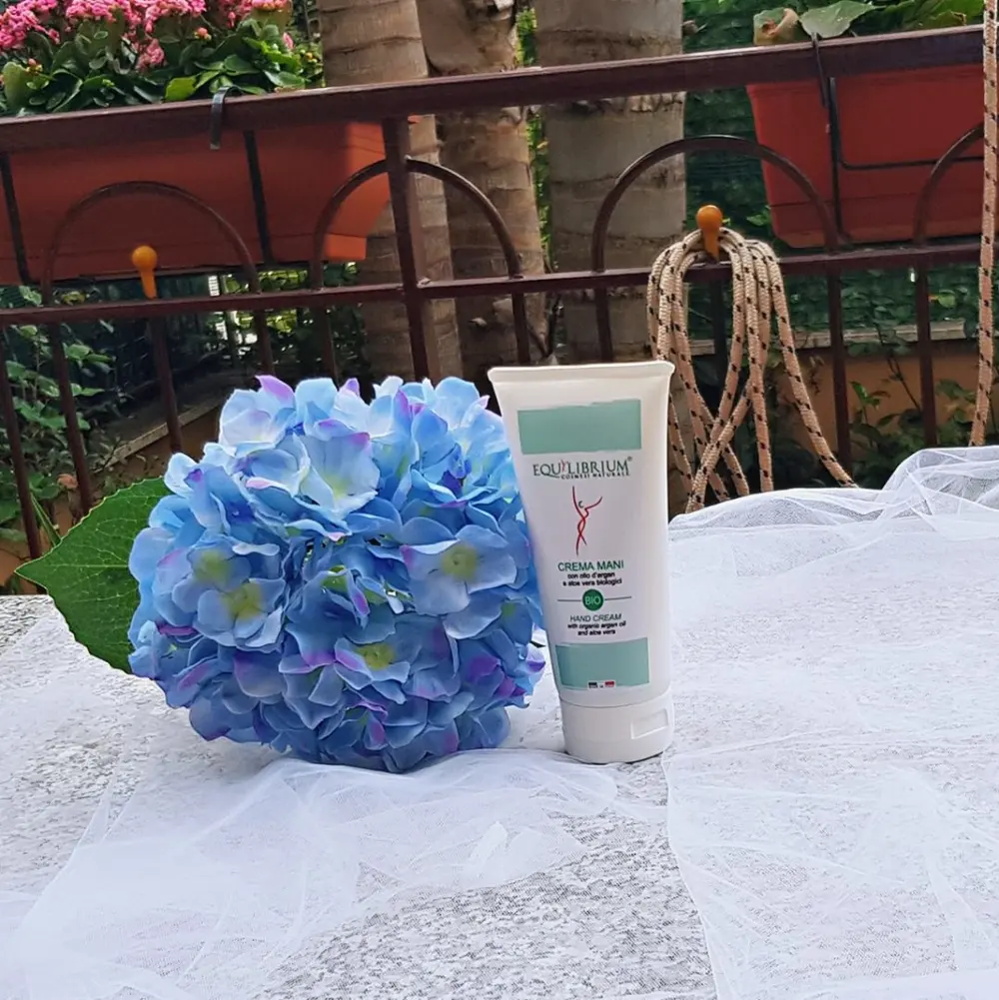
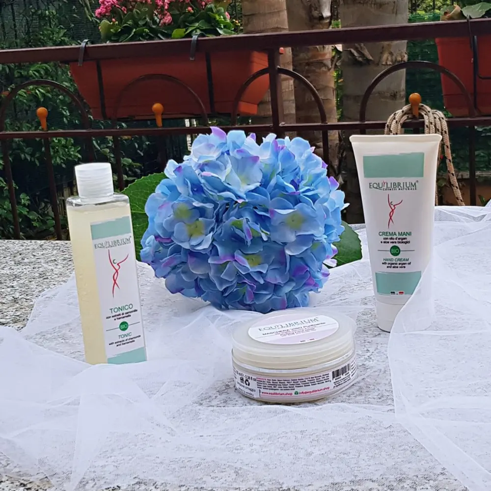

EQUILIBRIUM - COSMESI NATURALE

Qualche giorno fa mi ha citofonico il corriere, ho ricevuto con grande piacere una collaborazione dell'azienda equilibrium - cosmesi naturale.
Mi hanno gentilmente inviato questi tre prodotti BIo.
Una consegna inaspettata in quanto non me l'aspettavo più.
La prima che vi presento è:
LA MASCHERA VISO PURIFICANTE ALL'ARGILLA.

Io pensavo fosse una crema inizialmente, ho poi letto maschera e argilla e ho realizzato che fosse una vera e propria maschera per il viso.
Non vi nego che ho fatto gli occhi a cuoricino XD
Maschera viso purificante ed astringente alle argille bianche e brune con Bardana, Ortica ed altri estratti naturali Equilibrium Cosmesi Naturale. Grazie al mix calibrato di argille brune e argille bianche conferisce un’azione purificante e rimineralizzante a tutti i tipi di pelle. Ricca di estratti naturali, addolcisce e nutre l’epidermide detossinando e purificando la pelle.
Come usarla:
Applicare la maschera stendendola con un pennello semiduro, ottenendo uno strato uniforme di circa 2/3 millimentri. Dopo il tempo di posa togliere con spugnette umide, prima che asciughi. La maschera si può rendere più morbida aggiungendo un po’ di crema nutriente che consentirà, tra l’altro, una posa più lunga prima che asciughi ed indurisca.
Ingredienti:
Aqua, Kaolin, Solum Fullonum, Cetearyl Alcohol, C12-15 Alkyl Benzoate, Ethylhexyl Palmitate,Zinc Oxide, Glyceryl Stearate, PEG-7 Glyceril Cocoate, Propylene Glycol, Citric Acid, Disodium EDTA, Imidazolidinyl Urea, Parfum, Triethyl Citrate, Tocopheryl Acetate, Potassium Sorbate, Arctium Lappa Extract, BHT, Urtica Dioica Extract, Potassium Sorbate, Sodium Benzoate, Benzyl Alcohol. (profumo ipoallergenico - non contiene alcool)
Considerazioni:
Ok, dopo aver parlato di cose tecniche e scientifiche, adesso parliamo del pratico.
Mi è piaciuta molto perché fa il suo dovere. Sarà che non ho mai provato le maschere all'argilla cosmesi naturale, sarà che sono inesperta dell'articolo in sé, ma mi ha soddisfatta.
È Freschissima e lascia la pelle morbidissima.
Prezzo:
Dal sito ufficiale 16,90€ + spese di spedizione 20,90€
Da Amazon 23,79€
TONICO BIO

Essa purifica, rinfresca, tonifica e ravviva la pelle senza disidratarla.
Gli Estratti di Camomilla e di Hamamelis svolgono una dolce azione astringente, lenitiva e disarrossante.
Come e quando usarlo:
Dopo aver completato la pulizia con il latte detergente specifico, passare il tonico con un batuffolo di cotone su tutto il viso. Nel caso di pelli arrossate si consiglia di utilizzare il prodotto previo impacco con fazzolettino di carta lasciandolo in posa qualche minuto.
Avvertenza:
Contiene fragranze che, in rarissimi casi, possono risultare allergizzanti; si consiglia di provare il prodotto su una piccola porzione di cute prima dell’utilizzo.
Quindi mi raccomando, se vedete che non è un prodotto adatto a voi, non continuato ad utilizzarlo ovviamente.
Ingredienti:
Aqua, glycerin, sorbitol, hamamelis virginiana extract, chamomilla recutita extract, citric acid, polysorbate-20, parfum, tocopheryl acetate, panthenol, sodium hydroxyde, sodium jaluronate, aloe barbadensis leaf juice, potassium sorbate, thymus vulgaris extract. (da agricoltura biologica certificata)
Considerazioni:
Per quanto io abbia una pelle davvero delicata, e quando dico delicata, credetemi, DELICATA.
Tipo che ho 2-3 prodotti contati che vanno bene per il mio viso, il resto mi hanno fatto uscire esfoliazione, rossore, prurito fino a diventare crosticine ecc ecc. Ma forse proprio perché c'è la camomilla all'interno di questo tonico, non mi ha fatto controindicazioni. Infatti, una delle cose che non mi ha mai fatto male è proprio la camomilla. Tempo fa acquistavo il gel detergente della Yves Rocher alla camomilla e mi trovavo benissimo.
Quindi, approvato anche questo!
Prezzo:
Dal sito ufficiale 13,20€ + spesa di spedizione 17,20€
Da Amazon 9,90€
Il terzo ed ultimo prodotto è:
CREMA MANI Bio CONOLIO DI ARGAN E ALOE VERA BIOLOGICA.

La Crema Mani contiene Olio Extravergine d”Oliva, Olio d’Argan e Aloe Vera biologici, che insieme, hanno una straordinaria tripla combinazione protettiva e rigenerante.
Olio d’Oliva e Olio d’Argan: nutrono e idratano; Aloe Vera: lenisce e protegge.
Questo prodotto è studiato per rendere la pelle delle mani morbida e luminosa e contrastare la secchezza cutanea.
Ingredienti:
Aqua, Glicerin, Cetearyl alcohol, Stearic acid, Butyrospermum parkji butter, Acacia senegal gum, Argania spinosa kernel oil, Tryethyl citrato, Citric acid, Tocopheryl acetate, Aloe barbadensis leaf juice, parfum (ipo), Olea europea oil, Potassium sorbate, Sodium benzoate. (da agricoltura biologica certificata)
Non credo che in questo caso ci sia bisogno di indicazioni per l'uso.
Una crema mani bene o male, l'abbiamo utilizzata tutti.
Considerazioni:
Vi dirò, io non amo molto le creme mani, il motivo è semplice, odio quando le creme lasciamo un alone sulle mani o le lasciano unte.
L'unica crema mani che ho poi poche volte messa, perché per fortuna ho la pelle morbida ( d'altronde non faccio poi molto, quasi niente se non lavorare al pc e al tel, di conseguenza ho le mani morbidissime già di mio) ma a volte, soprattutto d'inverno, le mani si seccano anche, soprattutto, dovuto al freddo e allora anchio ricorro alla crema mani e l'unica, come dicevo, è la crema mani Eucerin che trovi davvero ottima.
Adesso posso dirvi che anche questa non mi dispiace, buona profumazione, non unge e lascia mani morbide a lungo.
Prezzo:
Dal sito ufficiale era in offerta ma ahimé dice che è esaurita.
Da Amazon: purtroppo anche qui non è disponibile. Ma vi terrò aggiornati se tornerà in vendita!
Ringrazio l'azienda per avermi scelta tra le tester dei prodotti di questi validi prodotti, invito tutti voi a visitare il sito Equilibrium - cosmesi naturale, perché è davvero ricco di tanti prodotti per la cura del corpo. Hanno anche una linea tutta dedicata all'uomo e poiiii anche anche prodotti alla bava di lumacaaaa.
